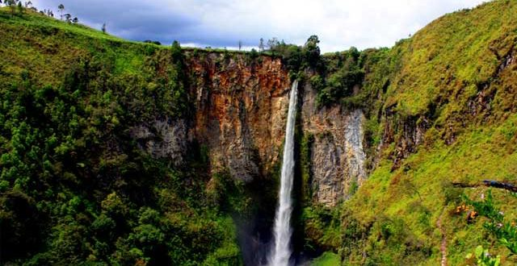
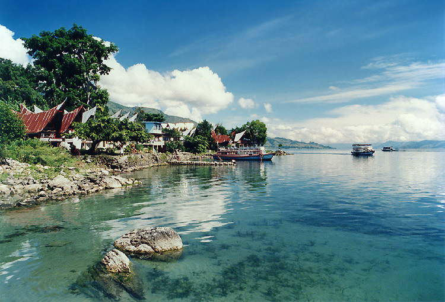

Wisata yang dekat dengan Hotel

Kota Balige
Balige adalah sebuah kota di Kabupaten Toba Samosir, Sumatra Utara. Lokasinya dua jam saja dari kota Prapat. Posisinya yang ada di ujung Danau Toba membuat kota ini menawarkan pemandangan alam yang cantik berupa pegunungan serta penampakan danau Toba yang luar biasa mempesona.
Air terjun Sigura-gura
Objek wisata khas di Balige ini wajib ditengok, ya. Ada air terjun Sigura-gura yang diunggulkan Sumatera Utara. Air terjun ini memiliki ketinggian 250 meter, loh.